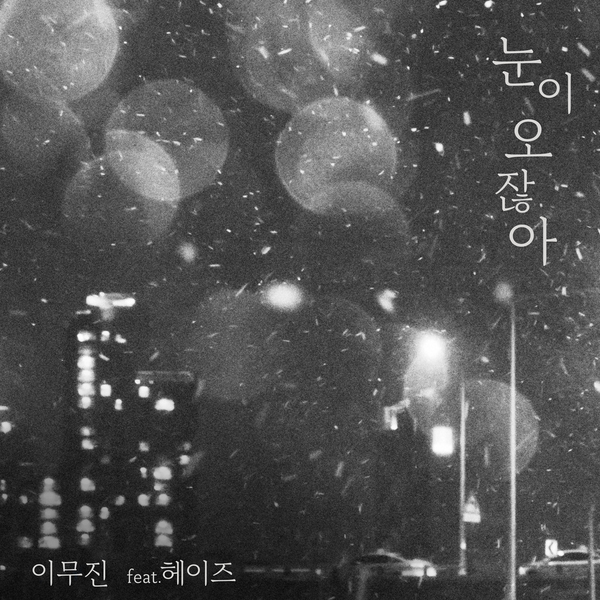

안녕하세요 라보엠입니다.
공기가 점점 차가워지고 있네요. 이번주에는 눈 소식도 있고 금방 겨울이 올 것 같습니다. 겨울은 차가운 바람과 함께 따뜻한 감성을 불러일으키는 계절이기도 하죠. 이 계절에 어울리는 감성적인 듀엣곡은 우리의 마음을 따뜻하게 해주고, 사랑하는 사람과의 소중한 순간을 더욱 특별하게 만들어주기도 합니다. 오늘은 겨울에 듣기 좋은 듀엣곡 세 곡을 소개해드리겠습니다.
1. 성시경, 아이유 - "첫 겨울이니까"
성시경과 아이유가 함께 부른 "첫 겨울이니까"는 2019년 발매된 곡으로, 첫 겨울을 맞이하는 연인의 설렘과 따뜻한 감정을 담고 있습니다. 두 가수의 부드러운 목소리가 어우러져 듣는 이로 하여금 겨울의 낭만을 느끼게 합니다.
이 노래는 "무얼 고를까 추운 겨울이니까 캐시미어 스웨터는 어떨까"와 같은 일상적인 가사로 시작해, "우리 둘만의 첫 겨울이니까"라는 후렴구에서 연인의 첫 겨울을 함께 보내는 설렘을 표현합니다. 이러한 소소한 일상 속의 행복과 사랑을 그린 가사는 많은 이들의 공감을 얻으며, 추운 날씨 속에서도 마음을 따뜻하게 해줍니다. 특히 아이유와 성시경의 목소리는 잘 어우러져 시작하는 연인의 설레임을 잘 담아냈습니다.
2. 이무진, 헤이즈 - "눈이 오잖아"
이무진과 헤이즈가 함께 부른 눈이 오잖아는 겨울의 낭만적인 분위기를 잘 살린 곡으로, 눈 내리는 풍경 속에서 느끼는 감정을 아름답게 표현했습니다. 두 아티스트의 개성 있는 목소리가 조화를 이루며 노래에 생동감을 더합니다.
노래는 눈 내리는 날 서로에게 전하고 싶은 마음과 그리움을 담고 있습니다. 특히 "눈이 오잖아 우리 처음 만난 그날처럼"이라는 가사는 첫 만남의 설렘과 추억을 떠올리게 하며, 눈 내리는 겨울날의 로맨틱한 분위기를 극대화합니다. 이 곡은 사랑하는 사람과 함께 듣기에 정말 좋은 곡이며, 겨울밤의 낭만을 더해줄거에요.

3. 김동률, 박새별 - "새로운 시작"
김동률과 박새별의 새로운 시작은 한 해를 마무리하고 새로운 출발을 준비하는 시기에 듣기 좋은 곡입니다. 이 노래는 2011년에 발매되었으며, 희망과 용기를 주는 메시지를 담고 있습니다. 가사에는 "이렇게 또 한 해가 저물고 여전히 난 세상이 어렵지만 내 옆에 나란히 함께 걸어갈 널 만난 걸 감사해"라는 문구가 있어, 지나간 시간에 대한 감사와 앞으로의 날들에 대한 기대감을 전합니다. 특히 "새로운 시작을 열게 해준 너"라는 부분은 사랑하는 사람과 함께 새로운 미래를 향해 나아가는 모습을 그려내며, 듣는 이들에게 큰 위로와 힘을 줍니다.
이번 겨울에는 소개해드린 세 곡과 함께 따뜻하고 감성적인 시간을 보내보세요. 각기 다른 매력을 지닌 이 노래들은 모두 겨울의 정취를 물씬 느낄 수 있도록 도와줍니다.
"첫 겨울이니까"는 연인의 첫 겨울을 함께하는 설렘을, "눈이 오잖아"는 눈 내리는 날의 로맨틱한 분위기를, "새로운 시작"은 한해의 마무리와 새로운 출발에 대한 희망과 용기를 전해줍니다. 이 노래들은 추운 겨울날에도 마음속 온기를 불어넣어 주며, 사랑하는 사람과의 소중한 시간을 더욱 특별하게 만들어줄 거라 생각합니다..
이번 겨울에는 이 감성적인 듀엣곡들과 함께 따뜻한 순간들을 만들어보세요. 이 따뜻한 음악들과 함께라면 어떤 추운 날씨도 즐겁고 따뜻하게 보낼 수 있을거게요.